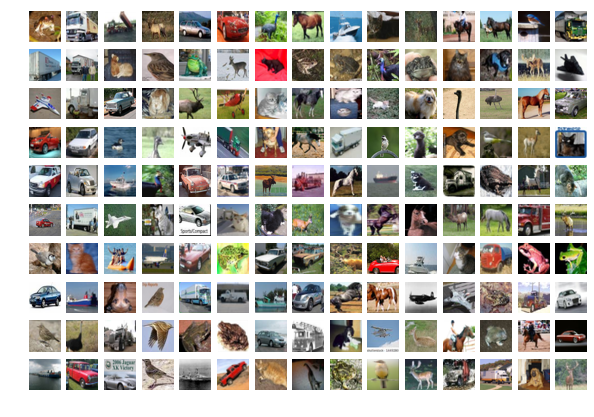
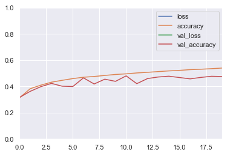
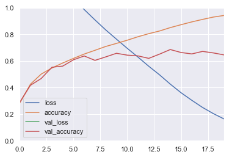
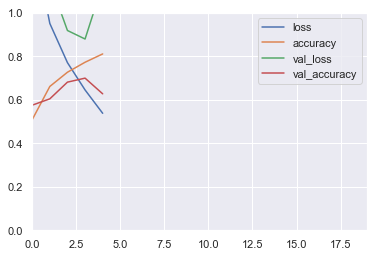

CNN
In this notebook you will learn how to build Convolutional Neural Networks (CNNs) for image processing.
Imports
%matplotlib inline
import matplotlib as mpl
import matplotlib.pyplot as plt
import numpy as np
import os
import pandas as pd
import sklearn
import sys
import tensorflow as tf
from tensorflow import keras
import time
import seaborn as sns
sns.set()
print("python", sys.version)
for module in mpl, np, pd, sklearn, tf, keras:
print(module.__name__, module.__version__)
python 3.7.1 (default, Dec 14 2018, 13:28:58)
[Clang 4.0.1 (tags/RELEASE_401/final)]
matplotlib 3.0.2
numpy 1.15.4
pandas 0.23.4
sklearn 0.20.1
tensorflow 2.0.0-beta0
tensorflow.python.keras.api._v2.keras 2.2.4-tf
assert sys.version_info >= (3, 5) # Python ≥3.5 required
assert tf.__version__ >= "2.0" # TensorFlow ≥2.0 required
Simple CNN
Load CIFAR10 using keras.datasets.cifar10.load_data(), and split it into a training set (45,000 images), a validation set (5,000 images) and a test set (10,000 images). Make sure the pixel values range from 0 to 1. Visualize a few images using plt.imshow().
classes = [
"airplane",
"automobile",
"bird",
"cat",
"deer",
"dog",
"frog",
"horse",
"ship",
"truck",
]
(X_train_full, y_train_full), (X_test, y_test) = keras.datasets.cifar10.load_data()
X_train = X_train_full[:-5000] / 255
y_train = y_train_full[:-5000]
X_valid = X_train_full[-5000:] / 255
y_valid = y_train_full[-5000:]
X_test = X_test / 255
plt.figure(figsize=(10, 7))
n_rows, n_cols = 10, 15
for row in range(n_rows):
for col in range(n_cols):
i = row * n_cols + col
plt.subplot(n_rows, n_cols, i + 1)
plt.axis("off")
plt.imshow(X_train[i])

Let's print the classes of the images in the first row:
for i in range(n_cols):
print(classes[y_train[i][0]], end=" ")
frog truck truck deer automobile automobile bird horse ship cat deer horse horse bird truck
1. Baseline Model
Build and train a baseline model with a few dense layers, and plot the learning curves. Use the model's summary() method to count the number of parameters in this model.
Tip:
- Recall that to plot the learning curves, you can simply create a Pandas
DataFramewith thehistory.historydict, then call itsplot()method.
model = keras.models.Sequential([
keras.layers.Flatten(input_shape=[32, 32, 3]),
keras.layers.Dense(64, activation="selu"),
keras.layers.Dense(64, activation="selu"),
keras.layers.Dense(64, activation="selu"),
keras.layers.Dense(10, activation="softmax")
])
WARNING: Logging before flag parsing goes to stderr.
W1229 09:21:53.523933 4571825600 deprecation.py:323] From /Users/admin/anaconda3/lib/python3.7/site-packages/tensorflow/python/keras/backend.py:4149: add_dispatch_support.<locals>.wrapper (from tensorflow.python.ops.array_ops) is deprecated and will be removed in a future version.
Instructions for updating:
Use tf.where in 2.0, which has the same broadcast rule as np.where
model.compile(loss="sparse_categorical_crossentropy",
optimizer=keras.optimizers.SGD(lr=0.01),
metrics=["accuracy"])
model.summary()
Model: "sequential_2"
_________________________________________________________________
Layer (type) Output Shape Param #
=================================================================
flatten_2 (Flatten) (None, 3072) 0
_________________________________________________________________
dense_8 (Dense) (None, 64) 196672
_________________________________________________________________
dense_9 (Dense) (None, 64) 4160
_________________________________________________________________
dense_10 (Dense) (None, 64) 4160
_________________________________________________________________
dense_11 (Dense) (None, 10) 650
=================================================================
Total params: 205,642
Trainable params: 205,642
Non-trainable params: 0
_________________________________________________________________
history = model.fit(X_train, y_train, epochs=5,
validation_data=(X_valid, y_valid))
Train on 45000 samples, validate on 5000 samples
Epoch 1/5
45000/45000 [==============================] - 4s 82us/sample - loss: 1.8995 - accuracy: 0.3133 - val_loss: 1.8570 - val_accuracy: 0.3368
Epoch 2/5
45000/45000 [==============================] - 3s 77us/sample - loss: 1.7134 - accuracy: 0.3834 - val_loss: 1.7347 - val_accuracy: 0.3782
Epoch 3/5
45000/45000 [==============================] - 4s 79us/sample - loss: 1.6369 - accuracy: 0.4152 - val_loss: 1.6705 - val_accuracy: 0.4022
Epoch 4/5
45000/45000 [==============================] - 4s 79us/sample - loss: 1.5826 - accuracy: 0.4356 - val_loss: 1.6407 - val_accuracy: 0.4118
Epoch 5/5
45000/45000 [==============================] - 3s 77us/sample - loss: 1.5412 - accuracy: 0.4512 - val_loss: 1.5708 - val_accuracy: 0.4322
pd.DataFrame(history.history).plot()
plt.axis([0, 19, 0, 1])
plt.show()

2. Convolution 2D, Pool2D
Build and train a Convolutional Neural Network using a "classical" architecture: N * (Conv2D → Conv2D → Pool2D) → Flatten → Dense → Dense. Before you print the summary(), try to manually calculate the number of parameters in your model's architecture, as well as the shape of the inputs and outputs of each layer. Next, plot the learning curves and compare the performance with the previous model.
Demo: https://cs231n.github.io/convolutional-networks/
model = keras.models.Sequential([
keras.layers.Conv2D(filters=32,\
kernel_size=3,\
padding="same",\
activation="relu",\
input_shape=[32, 32, 3]),
keras.layers.Conv2D(filters=32,\
kernel_size=3,\
padding="same",\
activation="relu"),
keras.layers.MaxPool2D(pool_size=2),
keras.layers.Conv2D(filters=64,\
kernel_size=3,\
padding="same",\
activation="relu"),
keras.layers.Conv2D(filters=64,\
kernel_size=3,\
padding="same",\
activation="relu"),
keras.layers.MaxPool2D(pool_size=2),
keras.layers.Flatten(),
keras.layers.Dense(128,\
activation="relu"),
keras.layers.Dense(10,\
activation="softmax")
])
model.summary()
Model: "sequential_3"
_________________________________________________________________
Layer (type) Output Shape Param #
=================================================================
conv2d (Conv2D) (None, 32, 32, 32) 896
_________________________________________________________________
conv2d_1 (Conv2D) (None, 32, 32, 32) 9248
_________________________________________________________________
max_pooling2d (MaxPooling2D) (None, 16, 16, 32) 0
_________________________________________________________________
conv2d_2 (Conv2D) (None, 16, 16, 64) 18496
_________________________________________________________________
conv2d_3 (Conv2D) (None, 16, 16, 64) 36928
_________________________________________________________________
max_pooling2d_1 (MaxPooling2 (None, 8, 8, 64) 0
_________________________________________________________________
flatten_3 (Flatten) (None, 4096) 0
_________________________________________________________________
dense_12 (Dense) (None, 128) 524416
_________________________________________________________________
dense_13 (Dense) (None, 10) 1290
=================================================================
Total params: 591,274
Trainable params: 591,274
Non-trainable params: 0
_________________________________________________________________
# Number of params in a convolutional layer =
# (kernel_width * kernel_height * channels_in + 1 for bias) * channels_out
(
(3 * 3 * 3 + 1) * 32 # in: 32x32x3 out: 32x32x32 Conv2D
+ (3 * 3 * 32 + 1) * 32 # in: 32x32x32 out: 32x32x32 Conv2D
+ 0 # in: 32x32x32 out: 16x16x32 MaxPool2D
+ (3 * 3 * 32 + 1) * 64 # in: 16x16x32 out: 16x16x64 Conv2D
+ (3 * 3 * 64 + 1) * 64 # in: 16x16x64 out: 16x16x64 Conv2D
+ 0 # in: 16x16x64 out: 8x8x64 MaxPool2D
+ 0 # in: 8x8x64 out: 4096 Flatten
+ (4096 + 1) * 128 # in: 4096 out: 128 Dense
+ (128 + 1) * 10 # in: 128 out: 10 Dense
)
591274
model.compile(loss="sparse_categorical_crossentropy",
optimizer=keras.optimizers.SGD(lr=0.01),
metrics=["accuracy"])
pd.DataFrame(history.history).plot()
plt.axis([0, 19, 0, 1])
plt.show()

Bathch Normalization
Looking at the learning curves, you can see that the model is overfitting. Add a Batch Normalization layer after each convolutional layer. Compare the model's performance and learning curves with the previous model.
Tip: there is no need for an activation function just before the pooling layers.
model = keras.models.Sequential([
keras.layers.Conv2D(filters=32,
kernel_size=3,
padding="same",
activation="relu",
input_shape=[32, 32, 3]),
keras.layers.BatchNormalization(),
keras.layers.Conv2D(filters=32,
kernel_size=3,
padding="same",
activation="relu"),
keras.layers.BatchNormalization(),
keras.layers.MaxPool2D(pool_size=2),
keras.layers.Conv2D(filters=64,
kernel_size=3,
padding="same",
activation="relu"),
keras.layers.BatchNormalization(),
keras.layers.Conv2D(filters=64,
kernel_size=3,
padding="same",
activation="relu"),
keras.layers.BatchNormalization(),
keras.layers.MaxPool2D(pool_size=2),
keras.layers.Flatten(),
keras.layers.Dense(128,
activation="relu"),
keras.layers.Dense(10,
activation="softmax")
])
model.summary()
Model: "sequential_1"
_________________________________________________________________
Layer (type) Output Shape Param #
=================================================================
conv2d (Conv2D) (None, 32, 32, 32) 896
_________________________________________________________________
batch_normalization (BatchNo (None, 32, 32, 32) 128
_________________________________________________________________
conv2d_1 (Conv2D) (None, 32, 32, 32) 9248
_________________________________________________________________
batch_normalization_1 (Batch (None, 32, 32, 32) 128
_________________________________________________________________
max_pooling2d (MaxPooling2D) (None, 16, 16, 32) 0
_________________________________________________________________
conv2d_2 (Conv2D) (None, 16, 16, 64) 18496
_________________________________________________________________
batch_normalization_2 (Batch (None, 16, 16, 64) 256
_________________________________________________________________
conv2d_3 (Conv2D) (None, 16, 16, 64) 36928
_________________________________________________________________
batch_normalization_3 (Batch (None, 16, 16, 64) 256
_________________________________________________________________
max_pooling2d_1 (MaxPooling2 (None, 8, 8, 64) 0
_________________________________________________________________
flatten_1 (Flatten) (None, 4096) 0
_________________________________________________________________
dense_4 (Dense) (None, 128) 524416
_________________________________________________________________
dense_5 (Dense) (None, 10) 1290
=================================================================
Total params: 592,042
Trainable params: 591,658
Non-trainable params: 384
_________________________________________________________________
model.compile(loss="sparse_categorical_crossentropy",
optimizer=keras.optimizers.SGD(lr=0.01),
metrics=["accuracy"])
history = model.fit(X_train, y_train, epochs=5,
validation_data=(X_valid, y_valid))
Train on 45000 samples, validate on 5000 samples
Epoch 1/5
45000/45000 [==============================] - 201s 4ms/sample - loss: 1.3647 - accuracy: 0.5088 - val_loss: 1.1809 - val_accuracy: 0.5754
Epoch 2/5
45000/45000 [==============================] - 194s 4ms/sample - loss: 0.9513 - accuracy: 0.6615 - val_loss: 1.1434 - val_accuracy: 0.6046
Epoch 3/5
45000/45000 [==============================] - 205s 5ms/sample - loss: 0.7711 - accuracy: 0.7269 - val_loss: 0.9189 - val_accuracy: 0.6814
Epoch 4/5
45000/45000 [==============================] - 203s 5ms/sample - loss: 0.6454 - accuracy: 0.7729 - val_loss: 0.8797 - val_accuracy: 0.6998
Epoch 5/5
45000/45000 [==============================] - 196s 4ms/sample - loss: 0.5381 - accuracy: 0.8112 - val_loss: 1.1316 - val_accuracy: 0.6276
pd.DataFrame(history.history).plot()
plt.axis([0, 19, 0, 1])
plt.show()

Try to estimate the number of parameters in your network, then check your result with model.summary().
Tip: the batch normalization layer adds two parameters for each feature map (the scale and bias).
Object Detection Project
The Google Street View House Numbers (SVHN) dataset contains pictures of digits in all shapes and colors, taken by the Google Street View cars. The goal is to classify and locate all the digits in large images. * Train a Fully Convolutional Network on the 32x32 images. * Use this FCN to build a digit detector in the large images.